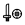
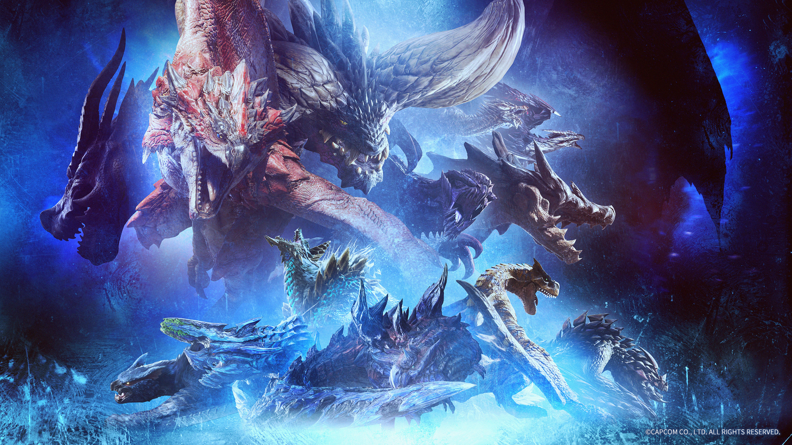

Monster Hunter World – Ein episches Abenteuer in einer lebendigen Welt
"Monster Hunter World" ist ohne Zweifel eines der beliebtesten Action-Rollenspiele der letzten Jahre. Entwickelt
von Capcom, bringt das Spiel das erfolgreiche Monster Hunter-Franchise in eine riesige,
offene Welt, die Spieler zu aufregenden Jagden auf gigantische Kreaturen einlädt. Es bietet eine Mischung aus
strategischem Gameplay, intensiven Kämpfen und einer lebendigen Spielwelt.
In diesem Text werfen wir einen genaueren Blick auf das Spiel, seine Mechaniken, die Welt, die Waffen und die
Monster, die es zu einem unvergesslichen Erlebnis machen.
1. Die Spielwelt: Die "Neue Welt"
Das Herzstück von Monster Hunter: World ist die riesige, offene Welt, die "Neue Welt", die von den Spielern
erkundet wird.
Im Vergleich zu den vorherigen Spielen der Reihe bietet die Neue Welt eine viel größere und lebendigere
Umgebung, die es zu entdecken gilt.
Merkmale der Welt:
Diverse Umgebungen: Die Neue Welt umfasst verschiedene Biome wie dichte
Wälder, weite Steppen, verschneite Berge und dschungelartige Gebirgsketten.
Diese verschiedenen Umgebungen bieten nicht nur ästhetische Vielfalt,
sondern beeinflussen auch das Gameplay. Jede Region hat ihre eigenen Ökosysteme, und die Monster
interagieren mit ihrer Umgebung auf unterschiedliche Weise.
Ökosysteme und Interaktion: Die Welt in Monster Hunter: World lebt.
Tiere, Pflanzen und Monster agieren miteinander. Man kann beobachten, wie sich kleinere Tiere in die Jagd
des Spielers einmischen oder wie größere Raubtiere kleinere Monster jagen.
Dynamisches Wettersystem:
Das Wetter kann sich im Spiel schnell ändern, was das Gameplay beeinflusst. Ein plötzlicher Regen oder ein
Sandsturm kann das Sichtfeld verringern oder bestimmte Monster in neue Verhaltensmuster versetzen.
2. Die Jagd – Strategisch und Intensiv
Monster Hunter: World ist vor allem eines: ein Spiel über das Jagen von Monstern. Doch diese Jagden sind alles
andere als simple Kämpfe. Sie erfordern Planung,
Geschick und Wissen über die Tiere, die man jagt.
Jagdstrategien:
Vorbereitung ist der Schlüssel: Bevor du in die Jagd ziehst, solltest du
deine Ausrüstung sorgfältig auswählen.
Verschiedene Monster haben unterschiedliche Schwächen und Resistenzen gegenüber Elementen, wie Feuer, Wasser
oder Eis. Deine Waffen und Rüstung müssen darauf abgestimmt werden.
Teamarbeit: In der Welt von Monster Hunter: World ist die Zusammenarbeit mit
anderen Spielern essentiell.
Man kann alleine jagen, aber mit einem Team wird die Jagd deutlich einfacher und strategischer. Das
Zusammenspiel von verschiedenen Waffen und Taktiken sorgt für aufregende und dynamische Kämpfe.
Verhalten der Monster: Jedes Monster hat ein einzigartiges Verhalten, das es
zu beobachten gilt. Einige Tiere sind aggressiv und greifen sofort an,
während andere sich auf fliehende Beute konzentrieren oder sich in bestimmten Gebieten aufhalten. Wer diese
Verhaltensweisen versteht, hat einen Vorteil bei der Jagd.
3. Die Waffen – Vielfalt für jeden Spielstil
In Monster Hunter: World gibt es eine riesige Auswahl an Waffen, die für unterschiedliche Spielstile und
Taktiken geeignet sind. Jede Waffe hat ihre eigenen Vor- und Nachteile und erfordert von den Spielern,
ihre Bewegungen und Angriffe zu meistern, um im Kampf erfolgreich zu sein.
Hauptwaffen im Spiel:

Schwert und Schild: Eine ausgewogene Waffe, die eine gute Mischung aus
schnellen Angriffen und Verteidigung bietet. Ideal für Spieler, die einen ausgewogenen Spielstil bevorzugen.
Guck dir hier ein Overview Video zur der Waffe an.
Langschwert: Mit seinen schnellen und präzisen Angriffen ist das Langschwert
ideal für Spieler, die einen aggressiveren Spielstil bevorzugen.
Es ermöglicht präzise, aber kraftvolle Treffer und bietet ein hohes Maß an Beweglichkeit.
Guck dir hier ein
Overview Video zur der Waffe an.
Großschwert: Diese Waffe ist schwer und langsam, bietet jedoch enorm viel
Schaden bei jedem Treffer. Sie erfordert eine präzise Handhabung und Timing, aber für geduldige Spieler kann
sie verheerend sein.
Guck dir hier ein Overview Video zur der Waffe an.
Lanze: Die Lanze ist eine besonders vielseitige Waffe, die für Spieler
geeignet ist, die sowohl defensiv als auch offensiv kämpfen wollen. Mit der Lanze kann man nicht nur
kraftvolle Stiche ausführen,
sondern sich auch geschickt verteidigen.
Sie hat eine hohe Reichweite und erlaubt es, Monster auf Distanz zu halten, während man gleichzeitig die
Möglichkeit hat, gezielte Angriffe auf Schwachstellen zu setzen.
Guck dir hier ein Overview Video zur der Waffe an.
Hämmer und Schlägel: Eine weitere mächtige Waffe, die es den Spielern
ermöglicht, durch rohe Kraft massive Schäden zu verursachen. Ideal für Spieler, die das Monster nicht nur
besiegen,
sondern auch seine Teile gezielt zerstören wollen.
Guck dir hier ein Overview Video zur der Waffe an.
4. Die Monster – Bedrohungen und Belohnungen

Kein Monster Hunter-Spiel wäre komplett ohne die Monster, die es zu jagen gilt.
In "Monster Hunter World" begegnen die Spieler einer Vielzahl einzigartiger Kreaturen, die in Größe, Verhalten
und Bedrohung stark variieren.
Einige der bekanntesten Monster:
Rathalos: Ein majestätischer, feuerspeiender Drache, der die Spielwelt
dominiert. Rathalos ist bekannt für seine flinken Angriffe und seine Fähigkeit, die Umgebung mit Feuer zu
beherrschen.
Tigrex: Ein aggressiver, riesiger Dinosaurier mit einem furchterregenden
Gebrüll. Tigrex ist besonders bekannt für seine zerstörerische Kraft und seine Fähigkeit, Feinde mit
Leichtigkeit zu zertrümmern.
Nergigante: Ein Elder Dragon, der als einer der mächtigsten Gegner des
Spiels gilt. Mit seinen scharfen Dornen und seiner Fähigkeit, sich schnell zu regenerieren, stellt
Nergigante eine echte Herausforderung dar.
Anjanath: Ein feuerspeiender, tyrannosaurusähnlicher Dinosaurier. Seine
gefährlichen Attacken und die feurige Atemtechnik machen ihn zu einem interessanten und herausfordernden
Gegner.
5. Belohnungen und Fortschritt
Ein weiterer wichtiger Aspekt von Monster Hunter: World ist das Belohnungssystem.
Die Spieler erhalten für ihre Jagden auf Monster wertvolle Ressourcen und Materialien, die sie verwenden können,
um ihre Ausrüstung zu verbessern und neue Waffen zu schmieden.
Belohnungen:
Teile von Monstern: Während der Jagd können die Spieler verschiedene Teile
des Monsters erbeuten, wie z.B. Schuppen, Hörner oder Zähne. Diese Materialien sind oft notwendig, um
bessere Ausrüstung zu craften.
Erfahrung und Ressourcen: Neben den Monsterteilen erhalten die Spieler
Erfahrungspunkte und Ressourcen, mit denen sie ihre Fähigkeiten weiter verbessern oder neue Rüstungen und
Waffen herstellen können.
Rüstung und Waffen: Eine der größten Belohnungen für das Besiegen von
Monstern ist die Möglichkeit,
neue Waffen und Rüstungen zu erstellen. Jede Waffe und Rüstung hat ihre eigenen Boni und Eigenschaften, die
den Spielstil des Spielers beeinflussen.
6. Fazit – Ein Abenteuer, das süchtig macht
Monster Hunter World ist mehr als nur ein Spiel. Es ist ein tiefes, komplexes Abenteuer, das strategisches
Denken, Teamarbeit und Hingabe verlangt. Mit einer riesigen offenen Welt,
vielen unterschiedlichen Waffen und herausfordernden Monstern gibt es unzählige Stunden an Spielspaß zu
entdecken. Ob alleine oder im Team, jede Jagd ist ein einzigartiges Erlebnis,
das die Spieler immer wieder aufs Neue fesselt. Wer einmal in die "Neue Welt" eingetaucht ist, wird sich nur
schwer von ihr lösen können.